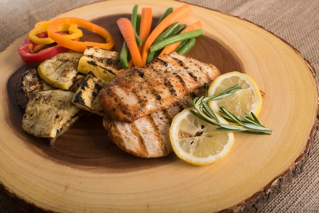

Grilled Lemon Chicken

Description
Grilled lemon chicken is a tender, juicy and savory grilling recipe that is perfect for summer. It's light, healthy and beaming with Mediterranean flavor!
Grilled Lemon Chicken is a quintessential grilling recipe that’s very basic in ingredients, but rich in flavor! The lemony marinade is made with fresh lemon juice, olive oil, garlic and oregano, which creates a tender and juicy grilled chicken recipe. Pair it with a salad, grilled vegetables or quinoa for a healthy delicious dinner any day of the week!
Ingredients:
- 4 each skinless, boneless chicken breasts
- 2 each lemons, cut into wedges
- 1 teaspoon salt
- 1 teaspoon garlic powder
- ½ teaspoon paprika
- ½ teaspoon ground black pepper
- ¼ cup unsalted butter, melted, divided
- 1 teaspoon white sugar, or more to taste
Steps:
- Poke surface of chicken all over with a knife or fork. Rub chicken pieces on all sides with cut surfaces of lemons, squeezing to release some of the juice; reserve remaining juice for grilling
- Combine salt, garlic, paprika, and pepper in a bowl. Brush chicken with 1/2 of the melted butter; sprinkle with 1/2 of the seasoning mix
- Preheat an outdoor grill for medium heat and lightly oil the grate
- Cook chicken on the preheated grill for 7 to 10 minutes. Flip, squeeze remaining lemon juice over chicken, brush with remaining butter, and sprinkle with the rest of the seasonings. Continue to grill until no longer pink in the centers and juices run clear, 8 to 10 minutes more. An instant-read thermometer inserted into the center should read at least 165 degrees F (74 degrees C)
- Sprinkle chicken with sugar just before serving. Grill cooked chicken for 2 minutes more. Serve